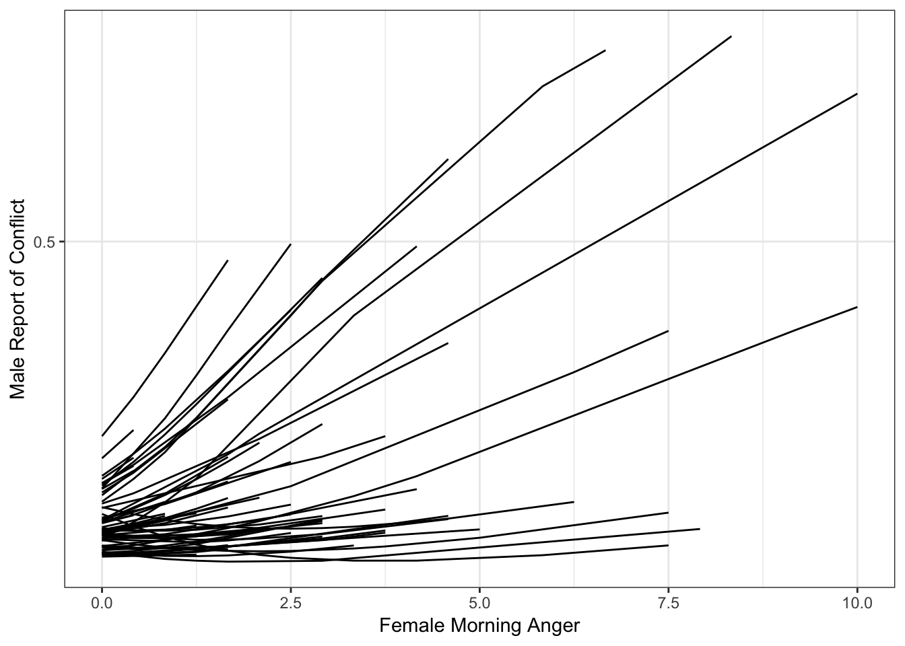
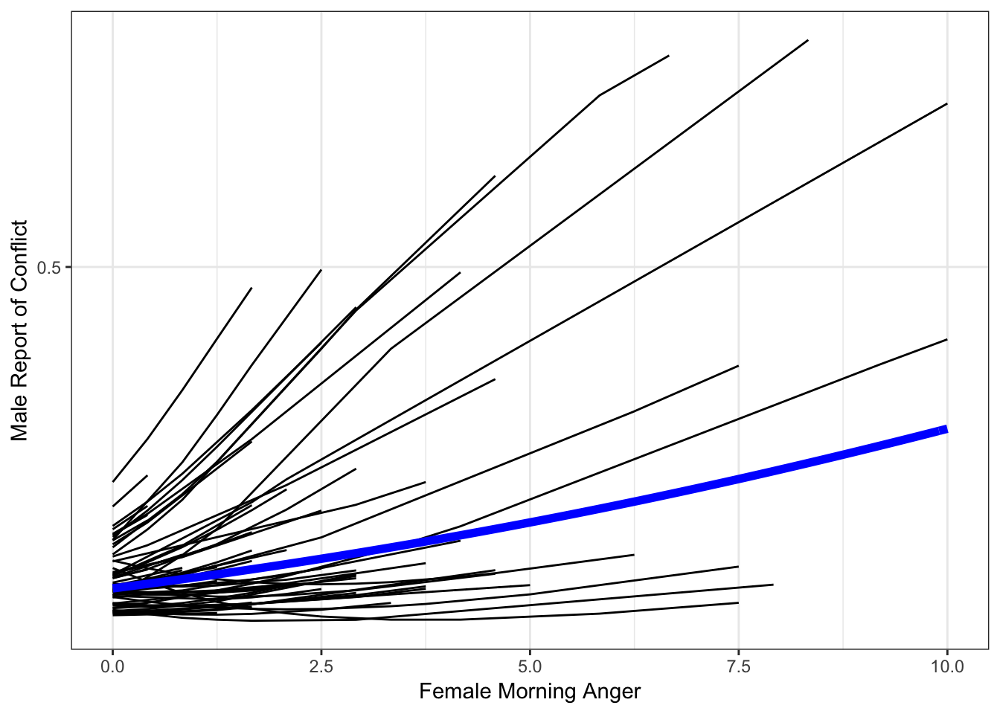
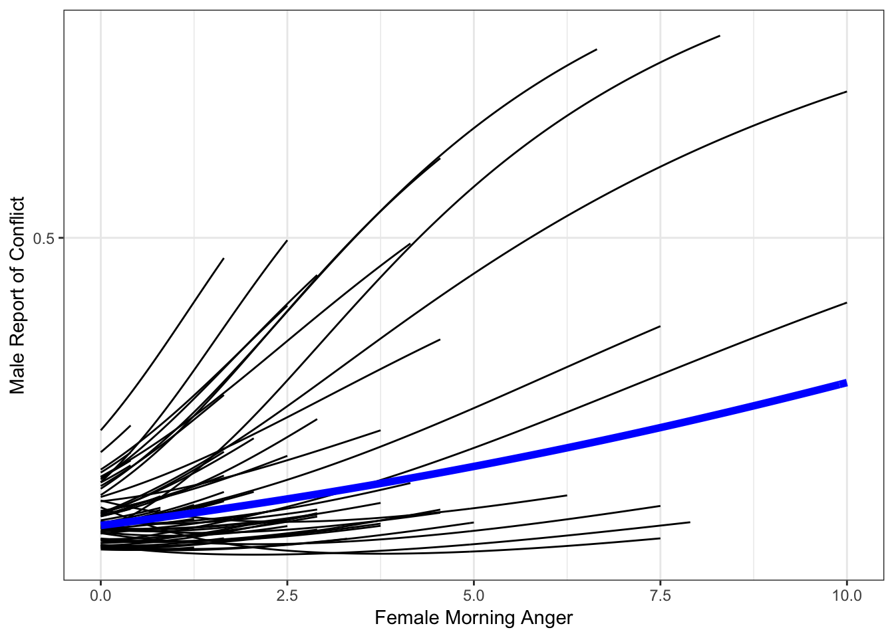

Spaghetti Plot for Multilevel Logistic Regression
Overview
This demo shows how to create a spaghetti plot of individual-specific effects from a multilevel logistic model.
We will use Ch. 6 data from Bolger & Laurenceau's Intensive Longitudinal Methods book. In this chapter, the authors used the example of the potential effect of a female partner's morning anger (amangcw) on her male partner's report of conflict (pconf; yes/no) later that evening. We will fit a similar model to the model presented in the book, except we will use Bayesian estimation. Using a Bayesian model will allow us to model random slopes.
Read in Data
We will read in the data directly from the Intensive Longitudinal Methods website.
library(data.table)
c <- as.data.frame(
fread("curl http://www.intensivelongitudinal.com/ch6/ch6R.zip | tar -xf- --to-stdout *categorical.csv")
)
head(c)## id time time7c pconf lpconf lpconfc amang amangc
## 1 1 2 -1.875699 0 0 -0.1568773 0.4166667 -0.0697026
## 2 1 3 -1.727551 0 0 -0.1568773 0.0000000 -0.4863693
## 3 1 4 -1.579402 0 0 -0.1568773 0.0000000 -0.4863693
## 4 1 5 -1.431254 0 0 -0.1568773 0.0000000 -0.4863693
## 5 1 6 -1.283106 1 0 -0.1568773 0.0000000 -0.4863693
## 6 1 7 -1.134958 0 1 0.8431227 0.0000000 -0.4863693
## amangcb amangcw
## 1 -0.4709372 0.4012346
## 2 -0.4709372 -0.0154321
## 3 -0.4709372 -0.0154321
## 4 -0.4709372 -0.0154321
## 5 -0.4709372 -0.0154321
## 6 -0.4709372 -0.0154321Load Libraries
library(brms)
library(ggplot2)
library(dplyr)Fit Model
catmod1B <- brm(pconf ~ amangcw + amangcb + lpconfc + time7c +
(amangcw | id),
family = bernoulli,
data = c, cores=4) summary(catmod1B)## Family: bernoulli
## Links: mu = logit
## Formula: pconf ~ amangcw + amangcb + lpconfc + time7c + (amangcw | id)
## Data: c (Number of observations: 1345)
## Samples: 4 chains, each with iter = 2000; warmup = 1000; thin = 1;
## total post-warmup samples = 4000
##
## Group-Level Effects:
## ~id (Number of levels: 61)
## Estimate Est.Error l-95% CI u-95% CI Eff.Sample
## sd(Intercept) 0.56 0.13 0.33 0.83 1521
## sd(amangcw) 0.38 0.19 0.04 0.78 888
## cor(Intercept,amangcw) 0.68 0.30 -0.13 0.99 1062
## Rhat
## sd(Intercept) 1.00
## sd(amangcw) 1.00
## cor(Intercept,amangcw) 1.00
##
## Population-Level Effects:
## Estimate Est.Error l-95% CI u-95% CI Eff.Sample Rhat
## Intercept -1.93 0.12 -2.17 -1.71 2387 1.00
## amangcw 0.12 0.13 -0.16 0.34 1493 1.00
## amangcb -0.23 0.24 -0.69 0.24 2863 1.00
## lpconfc 0.26 0.22 -0.19 0.68 3367 1.00
## time7c -0.20 0.07 -0.35 -0.06 4762 1.00
##
## Samples were drawn using sampling(NUTS). For each parameter, Eff.Sample
## is a crude measure of effective sample size, and Rhat is the potential
## scale reduction factor on split chains (at convergence, Rhat = 1).Generate Predictions
Create a new dataframe
df1 <- dplyr::select(c, id, amang, amangcw, pconf)
df1$amangcb <- 0
df1$time7c <- 0
df1$lpconfc <- 0Use new dataframe to generate fitted values
fitdf1 <- cbind(df1, fitted(catmod1B, newdata = df1, re_formula = NULL, incl_autocor = F)) Obtain the Fixed effect
x <- data.frame(amangc = seq(min(c$amangc), max(c$amangc), by = .1),
amang = seq(min(c$amang), max(c$amang), by = .1))
x$predM <-(1/(1 + exp(-(fixef(catmod1B)["Intercept", "Estimate"] +
fixef(catmod1B)["amangcw", "Estimate"]*x$amangc))))Plot the Results
Plot Individual Specific Effects
catspag0 <- ggplot(fitdf1, aes(amang, Estimate, group = id)) +
theme_bw() +
geom_line() +
ylab("Male Report of Conflict") +
xlab("Female Morning Anger") +
scale_y_continuous(breaks = c(0, .5, 1))
catspag0
Add in Fixed (Average) Effect
catspag0 + geom_line(data = x, aes(amang, predM, group = NULL),
color = "blue",
size = 2)
So we have our plot. It's not bad, but it's not great either. The individual-specific lines look a bit spikey, and one even looks crooked. We are missing that smooth, sigmoidal shape that characterizes logistic regression effects.
The reason for this is that we need to add more values for each person in order to properly display their effect. As of now, ggplot simply connects the points available, resulting in effects that appear too linear or kinked in some way.
Interpolate Data
To remedy the "spikey" way our spaghetti plot looks, we will need to interpolate data. To be clear, we are NOT adding more data to the model; the model only uses our actual observations to generate estimates. Instead, we are just filling in more datapoints for the purposes of plotting, and we will do this only within each subject's observed range. In other words, we will not add data that is fall outside of each person's mininum observed value or maximum observed value.
To accomplish this, we will need to create a new dataframe, called df2. We will begin by setting this dataframe to NULL so that it is just a placeholder waiting to "catch" the data we will populate it with.
Next, we will set up a for loop in which we will ask R to take each subject's minimum and maximum observed value, and generate values within that range in small increments, in this case increments of .05 (as shown with the seq() function). This will enable us to have a high degree of granularity so that our curves will be smooth when we plot them. We will also need to set other variables to 0, as they were mean centered in our model.
df2 <- NULL
for (i in unique(c$id)) {
cseq <- data.frame(
amangcw = seq(min(subset(c, id==i)$amangcw, na.rm=T),
max(subset(c, id==i)$amangcw, na.rm=T), .05),
amang = seq(min(subset(c, id==i)$amang, na.rm=T),
max(subset(c, id==i)$amang, na.rm=T), .05),
amangc = seq(min(subset(c, id==i)$amangc, na.rm=T),
max(subset(c, id==i)$amangc, na.rm=T), .05),
amangcb = 0,
lpconfc = 0,
time7c = 0,
id = i)
df2 <- rbind(df2, cseq)
}Now we have a very fine-grained version of our dataframe.
head(df2)## amangcw amang amangc amangcb lpconfc time7c id
## 1 -0.0154321 0.00 -0.4863693 0 0 0 1
## 2 0.0345679 0.05 -0.4363693 0 0 0 1
## 3 0.0845679 0.10 -0.3863693 0 0 0 1
## 4 0.1345679 0.15 -0.3363693 0 0 0 1
## 5 0.1845679 0.20 -0.2863693 0 0 0 1
## 6 0.2345679 0.25 -0.2363693 0 0 0 1Next, we will use the fitted() function to generate fitted values using this new, fine-grained dataframe. As noted in my Plotting Fixed Effects demo, the brms package that we used to fit our model features both fitted() and predict() to generate model predictions, but these function do slightly different things. We will use fitted() here; however, we would get the same thing using predict() in this case because we are not including uncertainty (i.e., credibility intervals) in these plots.
We will create a new dataframe, cseqpred, in which we will take our new dataframe, interp, and append to it the model predicted values.
fitdf2 <- cbind(df2, fitted(catmod1B, newdata = df2, re_formula=NULL, incl_autocor = F))
head(fitdf2)## amangcw amang amangc amangcb lpconfc time7c id Estimate
## 1 -0.0154321 0.00 -0.4863693 0 0 0 1 0.1008516
## 2 0.0345679 0.05 -0.4363693 0 0 0 1 0.1009719
## 3 0.0845679 0.10 -0.3863693 0 0 0 1 0.1011184
## 4 0.1345679 0.15 -0.3363693 0 0 0 1 0.1012908
## 5 0.1845679 0.20 -0.2863693 0 0 0 1 0.1014888
## 6 0.2345679 0.25 -0.2363693 0 0 0 1 0.1017120
## Est.Error Q2.5 Q97.5
## 1 0.03748252 0.04190912 0.1846715
## 2 0.03843459 0.04160572 0.1880640
## 3 0.03945012 0.04055447 0.1906275
## 4 0.04052519 0.03986744 0.1944184
## 5 0.04165633 0.03882778 0.1974636
## 6 0.04284041 0.03787511 0.2014179Now, we can create a plot very similar to our prior plot, but we will instead use our more fine-grained dataset so we get that sigmoidal curve we are after.
catspag <- ggplot(fitdf2, aes(amang, Estimate, group = id)) +
ylab("Male Report of Conflict") +
xlab("Female Morning Anger") +
theme_bw() +
scale_y_continuous(breaks = c(0, .5, 1)) +
geom_line() +
geom_line(data = x, aes(amang, predM, group = NULL),
color = "blue",
size = 2)
catspag
That looks a lot better!
Side by Side Comparison
As a final step, let's compare these two plots side by side so we can see how using the interpolated data has improved our plot.
library(gridExtra)
grid.arrange(catspag0 + geom_line(data = x, aes(amang, predM, group = NULL),
color = "blue",
size = 2) + labs(title = "Without Interpolated Data"),
catspag + labs(title = "With Interpolated Data"), ncol = 2)
updated April 22, 2019
The material above reflects the best of my knowledge on this topic. Please be sure to check your results and code carefully.